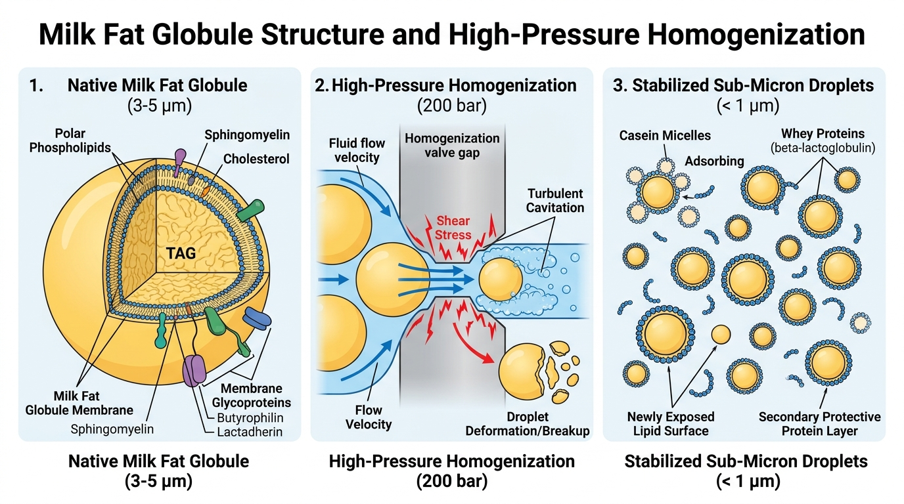
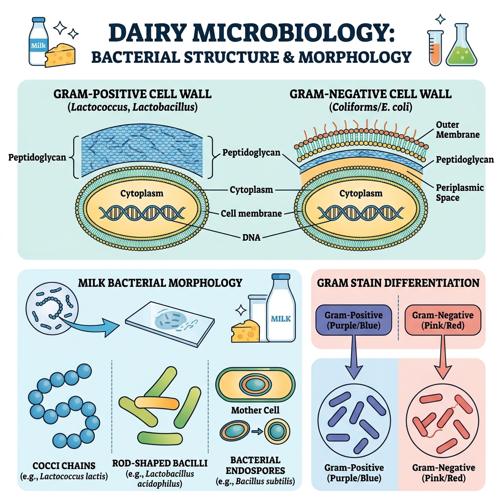
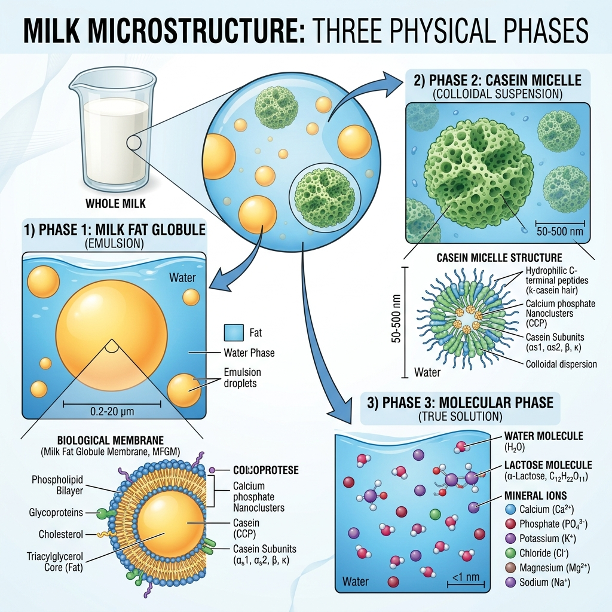

Lektion 03: Das Milchfettkügelchen, die MFGM & die Hochdruckhomogenisierung
Milk Fat Globule Architecture (MFGM Trilayer), High-Pressure Valve Mechanics (150–250 bar), Interfacial Casein Adsorption & Prevention of Lipolytic Rancidity.
🖼️ Wissenschaftliche Infografik (MFG & Homogenization Infographic)
Abbildung 3.1
Abbildung 3.1: (1) Natives Milchfettkügelchen mit Dreischichten-MFGM, (2) Homogenisierventil unter 200 bar Hochdruck mit Kavitation & Scherung, (3) Rekonstituierte Fettkügelchen (< 1 µm) überzogen mit Kaseinmizellen.
🔬 Die Dreischichten-Architektur der MFGM (Trilayer Structure)
Endoplasmatisches Retikulum
Direkt auf dem Triglyceridkern. Besteht aus polaren Lipiden und spezifischen Strukturproteinen der Euterzelle.
Dichte Proteinmatrix
Elektronendichtes Geflecht aus Butyrophilin (BTN) und dem Enzym Xanthinoxidase (XO).
Plasmamembran
Phospholipide (Sphingomyelin, Phosphatidylcholin) und negativ geladene Glykoproteine (Lactadherin / PAS 6/7), die Koaleszenz verhindern.
⚙️ Das Homogenisierungs-Prinzip (Engineering & Rheology)
Warum 2 Stufen im Homogenisator?
- • 1. Stufe (150 – 200 bar): Extrem hohe Scherung, Kavitation und Turbulenz zerschlagen die großen Fettkügelchen ($3{,}5\ \mu\text{m} \rightarrow < 1\ \mu\text{m}$). Dabei entstehen jedoch zusammenhängende Cluster (Fettklumpen).
- • 2. Stufe (30 – 50 bar): Geringerer Druck bricht die verklumpten Cluster auf und garantiert eine gleichmäßige Verteilung der Tröpfchen.
Die Grenzflächenexplosion
- • Die Fettoberfläche steigt von $80\ \text{m}^2/\text{L}$ auf $350\ \text{m}^2/\text{L}$ an!
- • Weil native MFGM nicht ausreicht, adsorbieren Kaseinmizellen und Molkenproteine sofort an die Fett-Wasser-Grenzfläche.
- • Homogenisiertes Fett verhält sich wie ein Pseudoprotein $\rightarrow$ homogenisierte Milch rahmt nicht mehr auf!
Rohmilch enthält das Enzym Lipoproteinlipase (LPL). Wenn Rohmilch ohne vorherige oder gleichzeitige Erhitzung geschert wird, zerstört man die MFGM. Die Lipase spaltet sofort Triglyceride in freie Fettsäuren (Buttersäure) $\rightarrow$ die Milch wird innerhalb von 10 Minuten ungenießbar ranzig! Daher gilt in jeder Molkerei: Homogenisierung IMMER bei 60–75 °C gekoppelt mit Pasteurisierung durchführen!
🧠 Tag 03 Quiz & Selbsttest
1. Verfahrenstechnik: Warum sinkt die Aufrahmgeschwindigkeit bei Verkleinerung des Durchmessers um das 4-fache gleich um das 16-fache?
2. Proteinbiochemie: Was bildet die neue Membran der Fettkügelchen nach der Hochdruckhomogenisierung?
3. Qualitätssicherung: Welches Enzym führt bei Zerstörung der MFGM zu sofortigem ranzigen Geschmack?
Lektion 02: Bakterienzellstruktur, Gram-Färbung & Rohmilchflora
Bacterial Cell Wall Architecture (Gram+ vs Gram-), Lactic Acid Bacteria, Psychrotrophic Spoilage Organisms & Heat-Resistant Endospores.
🖼️ Mikrobiologie-Diagramm (Dairy Microbiology Infographic)
Abbildung 2.1
Lektion 01: Zusammensetzung & das kolloidale Mehrphasensystem
Lerne die Zusammensetzung der Milch, die 3 physikalischen Zustände (Emulsion, Kolloid, echte Lösung) und Stokes' Aufrahmgesetz.
🖼️ Mikrostruktur-Diagramm
Abbildung 1.1
Vollständiger Lehrplan (B.Tech 8 Semesters)
Alle Fächer mit deutscher und englischer Fachbezeichnung.
Semester I (Aktuell)
- • Physikalische Chemie der Milch - ✅ Tag 01 & Tag 03
- • Grundlagen der Mikrobiologie - ✅ Tag 02
- • Thermodynamik (Thermodynamics) - ⏳ Tag 04
- • Strömungsmechanik (Fluid Mechanics)
- • Elementarmathematik (Elementary Mathematics)
- • Technisches Zeichnen (Engineering Drawing)
- • Molkereientwicklung & Milchproduktionsmanagement
- • Werkstattpraxis & Fertigungstechnik
- • Ethik & Wertebildung
Semester II
- • Industriestatistik (Industrial Statistics)
- • Biochemie & Humanernährung (Biochemistry & Nutrition)
- • Elektrotechnik (Electrical Engineering)
- • Traditionelle Milcherzeugnisse (Traditional Dairy Products)
- • Chemie der Milch (Chemistry of Milk)
- • Wärme- und Stoffübertragung (Heat and Mass Transfer)
- • Einführung in die Milchmikrobiologie
- • Trinkmilchtechnologie (Market Milk)
Studien- und Notizenprotokoll (Daily Log)
Erfasste Lerneinheiten und Status.
| Tag | Datum | Fach | Thema | Status |
|---|---|---|---|---|
| 01 | 06.10.2026 | Physikalische Chemie | Zusammensetzung & Mehrphasensystem | Abgeschlossen ✅ |
| 02 | 07.10.2026 | Grundlagen der Mikrobiologie | Zellmorphologie & Rohmilchflora | Abgeschlossen ✅ |
| 03 | 26.10.2026 | Physikalische Chemie | Milchfettkügelchen & Homogenisierung | Aktiv & Bereit ✅ |
Fachwörterbuch: Gesamter Fachwortschatz
Wichtige deutsche Begriffe mit Artikel und Beispielsätzen.
milk fat globule (MFG)
"Das Milchfettkügelchen hat einen Durchmesser von 3 bis 4 µm."
high-pressure homogenization
"Die Homogenisierung verhindert das Aufrahmen von Trinkmilch."
lipolysis / hydrolytic rancidity
"Lipolyse führt zur Freisetzung von freier Buttersäure."
phospholipid
"Phospholipide bilden die polare äußere Schicht der MFGM."
casein
"Kaseine adsorbieren an die neu geschaffene Fettoberfläche."
bacterial endospore
"Endosporen überleben die normale Pasteurisierung."